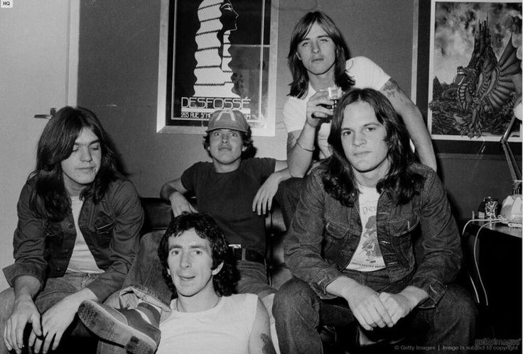

AC / DC adalah sebuah band rock Australia terbentuk di Sydney, New South Wales, Australia pada bulan Desember 1973 oleh Angus dan Malcolm Young.
Nama AC/DC (di Australia nama AC/DC biasa disebut dengan Acca Dacca) merupakan singkatan dari “ Alternating Current/ Direct Current “, akan tetapi kakak beradik Angus dan Malcolm Young mendapatkan inspirasi nama tersebut dari mesin jahit kakak perempuan mereka. Mereka suka melihat singkatan AC/DC yg tertera di merk mesin jahat kakak perempuan mereka sehingga mereka memutuskan untuk mengadopsi nama tersebut menjadi nama Band mereka.
Kembali ditahun 1973 pertama kali mereka berdiri sebagai band profesional dengan formasi Angus dan Malcolm Young sebagai gitaris, Larry Van Kriedt sebagai bassist, Dave Evans sebagai vokalis, dan Colin Burgess sebagai drummer, justru karir mereka langsung terpuruk. Mereka langsung mengganti formasi mereka dengan masuknya bassist Mark Evans, Drummer Phil Rudd dan Bon Scott sebagai Vokalis baru. Di formasi inilah menandai awal kesuksesannya band AC/DC
bersama personil yang baru, mereka berhasil menelurkan diantaranya album perdana "High Voltage" (1974) serta dua materi lainnya, "TNT" (1975) dan "Dirt Deeds Done Dirty Cheap" (1976). AC/DC kemudian mengadakan tour ke berbagai negara seperti Australia, Inggris dan Amerika.
Sayang di awal 1977, Mark Evans hengkang dari AC/DC. Posisinya lalu digantikan oleh Cliff Williams. Dengan bergabungnya Cliff, mereka merilis album "Let There Be Rock" (1977), "Powerage" (1978) dan "Highway to Hell" (1978).
Berita duka menerpa AC/DC karena sang vokalis Bon Scott ditemukan tewas dalam mobil akibat mabuk berat pada 1980. Mereka kemudian merekrut Brian Johnson untuk mengisi posisi vokalis.
Lagi-lagi AC/DC harus kehilangan member. Kali ini sang drummer, Phill Rudd, harus hengkang. Posisinya kemudian digantikan oleh Simon Wright. Meski sering berganti personil, AC/DC produktif dalam merilis album baru diantaranya "Fly On The Wall" (1985), "Who Made Who" (1986) dan "Blow Up Your Video" (1988). Simon tak bertahan lama, ia kemudian hengkang dan digantikan oleh Chris Slade.
1994, Slade keluar dan Pill Fraud kembali mengisi posisi drummer. Setelah itu AC/DC merilis album "Ballbreaker" (1995) dan "Stiff Upper Lip" (2000). Selama tahun 2000-an, AC/DC menggelar berbagai konser di negara. Konser tersebut berhasil mengumpulkan 500 ribu penonton.
Pensiunnya Malcolm Young karena penyakit demensia yg dialaminya sehingga memaksakan ia pensiun dari Band yg telah ia dirikan bersama adiknya, Angus Young, di tahun 2014. Posisinya pun digantikan oleh keponakannya yg juga seorang gitaris yaitu Stevie Young. Berjuang melawan penyakitnya, di tahun 2017 akhirnya Malcolm Young wafat di usianya yg ke 64 tahun.
album mereka telah terjual dalam jumlah luar biasa, total sekarang diperkirakan lebih dari 200 juta kopi di seluruh dunia, dengan album 1980 Back In Black menjual lebih dari 21 juta di AS saja dan 40 juta lebih di seluruh dunia, sampai-sampai menurut statistik, album mereka diklaim sebagai terlaris di dunia yang pernah dirilis oleh band.